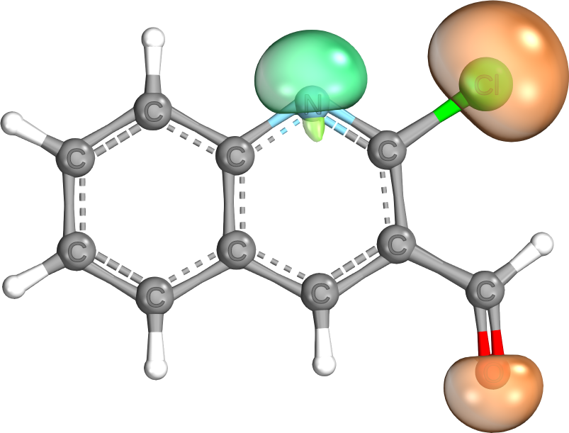
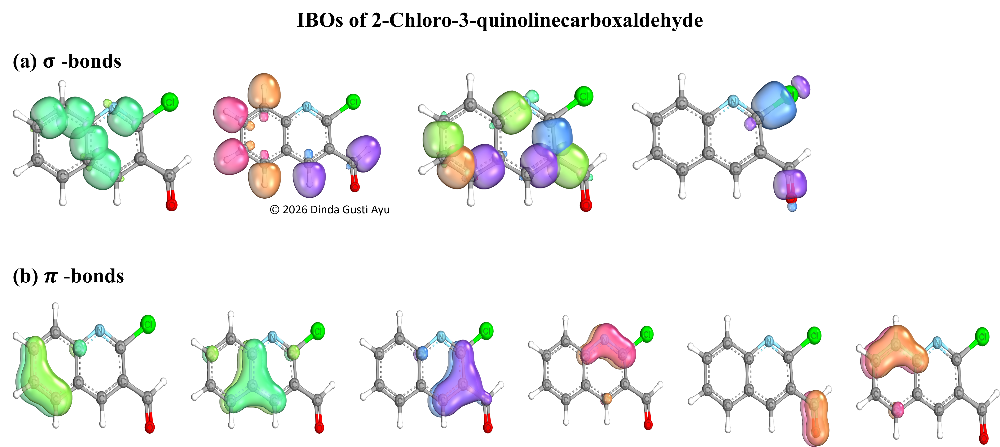

localized occupied orbitals (IBOs)
This page contains a Python script to compute localized occupied molecular orbitals using the intrinsic bond orbital (IBO) method.
Note
This script requires the canonical occupied orbitals. These orbitals are tranformed into itrinsic atomic orbitals (IAOs) and localized by maximizing the sum of the fourth powers of the IAO partial charges, which yield orbitals that correspond to chemically intuitive core electrons, lone pairs, and two center bonds (\(\sigma\) and \(\pi\)).
Method 1, using Knizia’s algorithm to localize IAO orbitals
# Run Internal Bond Orbital
import numpy as np
from pyscf import gto, scf, lo, tools
from functools import reduce
from pyscf.tools import cubegen, molden
mol = gto.M(atom="opt_mol.xyz")
# set basis set
mol.basis = "--------"
# Set DFT functional
mf = dft.RKS(mol)
mf.xc = "-----"
mf.kernel()
# Extract occupied canonical MOs
occ_idx = mf.mo_occ > 0
# Lowdin-Orthogonalize IAO
a = lo.vec_lowdin(a, mf.get_ovlp())
# Method 1, using Knizia's algorithm to localize IAO orbitals
# Generate IBOS from orthogonal IAOs
ibo = lo.ibo.ibo(mol, mo_occ, iaos = a)
# Compute diagonal Fock matrix elements (expect energies in Hartrees)
fock_ao = mf.get_fock()
fock_ibo = reduce(numpy.dot, (a.T, mf.get_ovlp(), mo_occ))
ibo_energies = np.diag(fock_ibo)
# Export all IBOs into a single Molden file
with open("IBO_mol.molden", "w") as f:
molden.header(mol, f)
molden.orbital_coeff(
mol, f, ibo, ene = ibo_energies, occ = mf.mo_occ[occ_idx])
Method 2, the modified Pipek-Mezey
# Run Method 2, the modified Pipek-Mezey
mo_occ = mf.mo_coeff[:,mf.mo_occ>0]
iaos = lo.iao.iao(mol, mo_occ)
ibo = lo.ibo.ibo(mol, mo_occ, locmethod='PM', iaos=iaos).kernel()
# Export the result into cube file
for i in range(ibo.shape[1]):
tools.cubegen.orbital(mol, f'IBO_PM_mol.cube', ibo[:,i])
For example illustrate one-center IBOs, orbitals 18, 22, and 46, which correspond to the lone electron pairs on the carbonyl oxygen, chlorine, and nitrogen ring in 2-Chloro-3-quinolinecarboxaldehyde. Colors indicate orbital phase.


IBOs of 2-Chloro-3-quinolinecarboxaldehyde showing lone pair positions.

IBOs of molecules: (a) \(\sigma\)-bonds and (b) \(\pi\)-bonds of 2-Chloro-3-quinolinecarboxaldehyde. Each \(\sigma\)-bonds and \(\pi\)-bonds are shown separately.